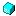

Описание
Расположен в файле: /engine/kernel/ModuleLoader.php
Выполняет загрузку модулей и передаёт управление им
Выполняет загрузку модулей и передаёт управление им
- author: - Solopiy Artem
 $_data (line
$_data (line Константы класса
Информация: MODULE_PATH = "engine/modules/" (line 20)
Константа содержит по-умолчанию путь к модулям
Константа содержит по-умолчанию путь к модулям
Методы
Информация:
void
getOutput
()
 Конструктор __construct (line 43)
Конструктор __construct (line 43)
ModuleLoader __construct( Integer $type, [Array $data = NULL])
Конструктор
Конструктор
Параметры
- Integer $type: Тип модуля
- Array $data: Массив с передаваемыми данными в модуль
Info
- access - public
 Method loadModule (line 55)
Method loadModule (line 55)
void loadModule( Integer $type, [Array $data = NULL])
Загружает модуль и передаёт ему управление
Загружает модуль и передаёт ему управление
Параметры
- Integer $type: ID модуля
- Array $data: передаваемые данные
Info
- throws - Exception Ффйл модуля не существует
- access - public